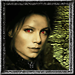

Forums galactiques > Assemblée Galactique : diplomatie officielle > Nous nous aimions Mina...
Pages : 1
| Al-Kashi Respect diplomatique : 389  21/06 ETU 10:38 | Score : 12 Détails
... Chers amis je viens vous annoncer là une triste nouvelle... En effet, je viens vous dire qu'avec Mina Borgia nous avons décidé de nous séparer officiellement. Notre amour fut tendre et profond, mais incomplet. Il manquait quelque chose... Cette chose si envoutante et délicieuse, inaccessible mais pourtant indispensable. Notre amour est impossible, et nous l'avons tous deux découvert. Après nous être concertés, nous avons pensé que la la Galaxie devait être au courant. Chaque soir Mina ne voulait plus des légumes et fruits que je lui préparais... Chaque matin elle revenait, le visage dans le sang, et me disant qu'elle n'avait plus faim... Nous n'étions malheureusement pas faits l'un pour l'autre. Mais nous reterons amis, fiers et très proches. Dans l'armée nous n'abandonnons jamais un allié. Quiconque tentera de lui faire du mal, mourira sous mon feu. Et c'est de même pour Mata Hari, jamais personne ne pourra la toucher, lui faire du mal. En ces temps où la guerre pourrait détruire, où les débats sont tendus, où les conflits peuvent éclater... C'est encore une nouvelle déception que je viens annoner. Rien qu'à prononcer ce discours ja'i les larmes aux yeux. Mais mon coeur est à présent tourné tout entier vers la merveilleuse Mata Hari. A bientôt. | ||
| dark maul Respect diplomatique : 13  21/06 ETU 17:49 | Score : 1 Détails Quel message remarquable maitre !
** et les gardes chaps émus par ce discours se mirent à pleurer et a venerer le grand maitre ** Encore des votes tres justes ! | ||
| Mina Borgia Respect diplomatique : 31  23/06 ETU 01:58  | Score : 13 Détails Mon amour,
Notre histoire était vouée à l'échec hélas. Mes proches m'avaient pourtant prévenue de ne point m'attacher à toi, un mortel, et que notre relation était vouée à l'échec. Mais je n'ai pas voulu les écouter et certains m'ont même condamnée pour cela. Mais comment aurais-je pu résister à ton profond regard berbère dans lequel je me noyais avec délectation à chaque fois que tes yeux plongeaient dans les miens ? Je n'oublierai jamais ces moments, trop brefs hélas, que nous avons passés ensemble, ces promenades dans le parc, ou dans cette crique près du grand lac. Mais plus notre passion grandissait, plus mes défenses tombaient et moins j'arrivais à contrôler mes pulsions instinctives. Plusieurs fois ces derniers temps je me suis surprise alors que nous étions ensemble, et que je m'abandonnais dans tes bras, à fixer les palpitations de tes jugulaires, avec toujours plus de difficultés à me ressaisir pour éviter qu'un accident n'arrive. Peut-être auras tu pris conscience de ces choses avant moi et su éviter le drame vers lequel nous nous dirigions tout droit l'un comme l'autre. Nous avons essayé de nous tenir entre les ténèbres et la lumière mais nous nous perdions de plus en plus. Soit heureux, c'est le moins que je puisse te souhaiter à présent. Mina |
Pages : 1
Forums galactiques > Assemblée Galactique : diplomatie officielle > Nous nous aimions Mina...